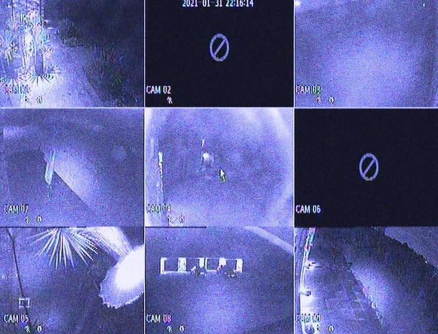

ЗАГАДОЧНАЯ СМЕРТЬ ЦЕЛОГО IT-ОТДЕЛА: ВСЕ ПРОГРАММИСТЫ ПОГИБЛИ В ГЛАВНОМ ОФИСЕ КОМПАНИИ XXXXXXX БЕЗ ВИДИМОЙ НА ТО ПРИЧИНЫ
February 14, 2*** - 9:11 PM
В Норвежском городе Осло утром 14 февраля, примерно в 12:00 по местному времени, в офисе IT‑компании XXXXXX были найдены тела всех нынешних сотрудников. Сообщается о 25 погибших на месте; раненых и выживших, к сожалению, нет. Эта новость в считаные минуты облетела местные СМИ и вызвала волну потрясения не только в столице Норвегии, но и далеко за её пределами: подобные массовые инциденты крайне редки для спокойной и безопасной Осло, ассоциирующейся с высоким уровнем жизни и низкой преступностью. На место трагедии было вызвано большое количество чрезвычайных служб, над городом кружили полицейские вертолеты.
По словам главы полиции Сериз *******, оперативные службы активно изучают место преступления: ведётся тщательный осмотр помещений, собираются улики, анализируются записи с камер видеонаблюдения и опрашиваются возможные свидетели из соседних зданий. Представители правоохранительных органов пока воздерживаются от комментариев о возможных версиях случившегося.

UPD: Предполагаемый преступник на данный момент не обнаружен, насколько известно нашей редакции, следов и улик на месте найдено не было. Несмотря на скудное количество информации расследование продолжается. Сериз ******* отмечает, что днём позже в своих собственных квартирах были обнаружены мёртвыми бывшие сотрудники той же ИТ компании. Другие детали дела пока что не разглашались.
INVESTIGATION SUSPENDED
September 13, 2*** - 11:59 PM
A̶t̶ ̶t̶h̶a̶t̶ ̶m̶o̶m̶e̶n̶t̶,̶ ̶t̶h̶e̶ ̶i̶n̶v̶e̶s̶t̶i̶g̶a̶t̶i̶o̶n̶ ̶w̶a̶s̶ ̶s̶u̶s̶p̶e̶n̶d̶e̶d̶.̶ ̶I̶f̶ ̶y̶o̶u̶ ̶h̶a̶v̶e̶ ̶a̶n̶y̶ ̶q̶u̶e̶s̶t̶i̶o̶n̶s̶,̶ ̶p̶l̶e̶a̶s̶e̶ ̶c̶o̶n̶t̶a̶c̶t̶ ̶y̶o̶u̶r̶ ̶l̶o̶c̶a̶l̶ ̶p̶o̶l̶i̶c̶e̶ ̶d̶e̶p̶a̶r̶t̶m̶e̶n̶t̶.̶ ̶N̶o̶r̶t̶h̶e̶r̶n̶ ̶C̶r̶i̶m̶e̶s̶ ̶i̶s̶ ̶n̶o̶t̶ ̶r̶e̶s̶p̶o̶n̶s̶i̶b̶l̶e̶ ̶f̶o̶r̶ ̶t̶h̶e̶ ̶p̶r̶o̶g̶r̶e̶s̶s̶ ̶o̶f̶ ̶t̶h̶e̶ ̶i̶n̶v̶e̶s̶t̶i̶g̶a̶t̶i̶o̶n̶.̶
UPD: Вся приведенная выше информация неактуальна. Не ищите дополнительную информацию по этому расследованию. Вас это не касается. Эта страница заблокирована и скоро будет удалена.